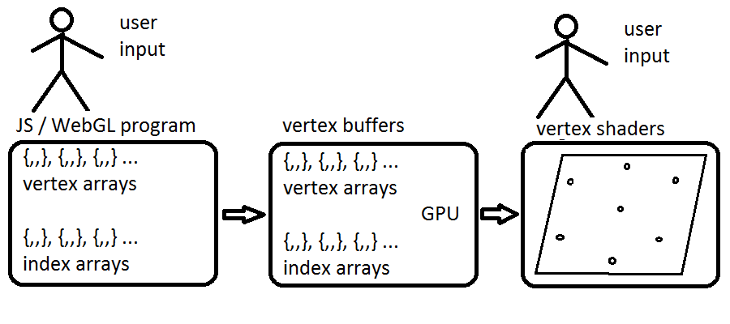
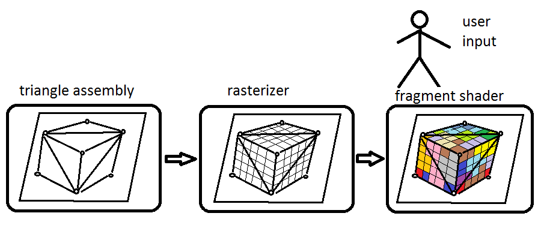
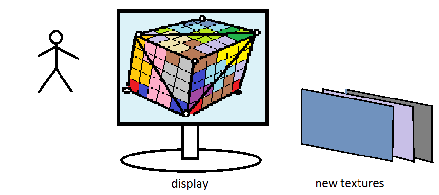

WebGL (Web Graphics Library) is a JavaScript API for rendering interactive 2D and 3D graphics within any compatible web browser without the use of plug-ins.
WebGL is designed and maintained by the non-profit Khronos Group.
- fully integrated with other web standards
- uses GPU for best performance
- WebGL elements can be mixed with other HTML elements
Two parts:
- control code written in JavaScript
- shader code that is written in ESSL
How it works?



Problems:
- low-level nature of the WebGL API
- two languages to learn and use
Solution:
Use one of the high-level libraries
Three.js is a cross-browser JavaScript library and Application Programming Interface (API) used to create and display animated 3D computer graphics in a web browser.
- allows the creation of GPU-accelerated 3D animations using JS language
- works without relying on proprietary browser plugins
Three.js includes the following features:
- Scenes.
- Cameras.
- Objects.
- Geometry.
- Animations.
- Effects.
- Lights.
- Materials.
- Data loaders.
- Support.
- Examples.
- Debugging.
Code Example
First we have to include The Three.js library within a web page by linking to it's copy.
it can be a local copy:
or a remote one:
Then we can write a minimal working example
var scene = new THREE.Scene();
var camera = new THREE.PerspectiveCamera(25, 1, 0.1, 1000);
var renderer = new THREE.WebGLRenderer();
renderer.setSize(300, 300);
document.getElementById('canvas').appendChild(renderer.domElement);
var texture = new THREE.TextureLoader().load('images/texture.gif');
var geometry = new THREE.BoxGeometry();
var material = new THREE.MeshBasicMaterial( { map: texture } );
var cube = new THREE.Mesh(geometry, material);
scene.add(cube);
camera.position.z = 5;
var animate = function () {
requestAnimationFrame(animate);
cube.rotation.x += 0.01;
cube.rotation.y += 0.01;
renderer.render(scene, camera);
};
animate();
Links:
WebGL official siteTreeJS official site
Thank you for your attention
vasily.guseff@gmail.com